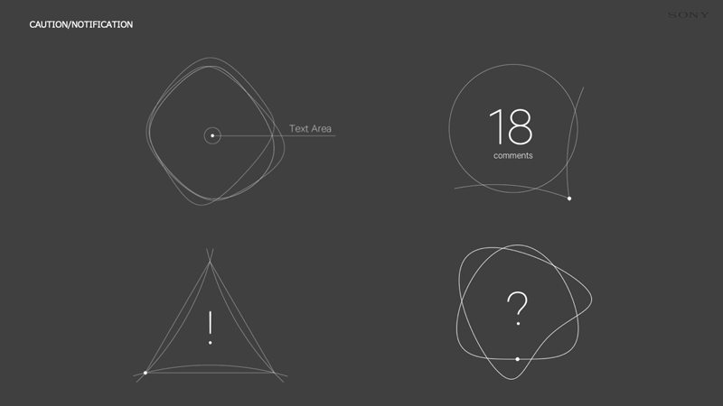
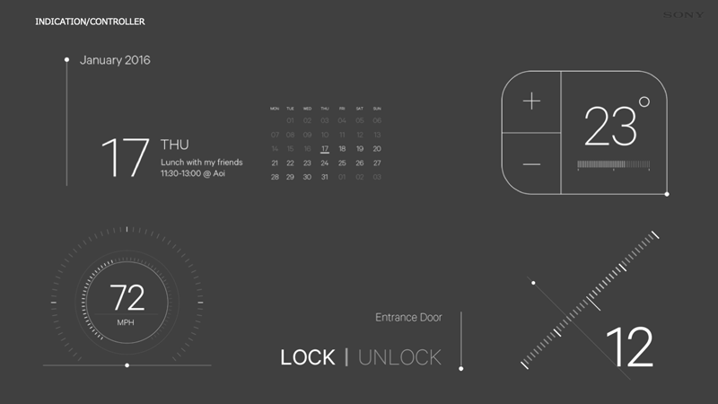

Project Overview
New UI design concept for transparent display / projector compatible wearable devices.


Minimal GUI components composed of points, lines, and surfaces, visual expression of the voice agent.
Responsibilities
The design was deployed in Xperia halo / Xperia Touch / VISION-S.
Achievements
Staff: Creative Director: Shinichi Iriya, Art Directors: Satoshi Akagawa / Takahiro Kawaguchi, Designers: Satoshi Ishii / Masanori Matsushima / Keishi Tsuchiya / Takahiro Komatsu
Tools: Sketch / Adobe Photoshop / Adobe Illustrator / Adobe AfterEffects / CoffeeScript